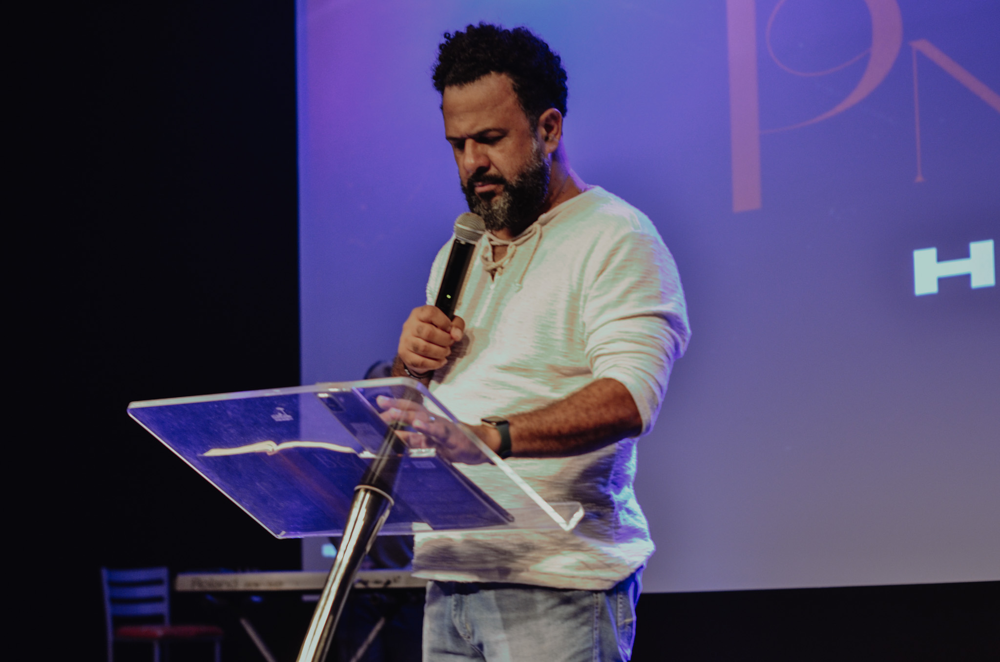

Comunidade
Fome Sede
Nossa História
Ministérios
Pastores
Agenda
Missões
Participe

Palavra
2 Timóteo: 3-16
"Toda a Escritura é inspirada por Deus e útil para
ensinar a verdade e a maneira certa de viver"
Adoração
João: 4-24
"Deus é espírito, e é necessário que
os seus adoradores o adorem
em espírito e em verdade".
Intercessão
Efésios 6-18
Orem no Espírito em todas as ocasiões, com toda
oração e súplica; tendo isso em mente, estejam
atentos e perseverem na oração por todos os santos."
O PROPÓSITO MINISTERIAL:
- Se você for pensar bem, não existe um alvo mais sublime na vida de alguém do que agradar a Deus. Mas, pessoas podem dizer: “Não, o alvo mais sublime é ser igual a Jesus”. Apesar desse alvo ser tão nobre, isso pode demonstrar um teor de egoísmo (no caso, de me tornar igual a Jesus).
- Então, acima de tudo, o que tem que queimar no meu coração é agradar e glorificar a Deus acima de qualquer circunstância. É o alvo mais sublime e espiritual que alguém pode ter na caminhada cristã. É a motivação mais pura que alguém poderá almejar.
- A Bíblia deixa bem claro que o segredo principal para agradar e glorificar a Deus é ter profunda intimidade com Ele. Por isso nós damos muito valor à adoração. É preciso que você possa crescer no seu TSD (Tempo Sozinho com Deus), que aprenda a ouvir a voz do Espírito Santo falando ao seu espírito, e a ler a Bíblia, buscando a verdadeira intimidade com o Pai.
- Jesus disse: “Ide por todo o mundo e fazei discípulos”. E não parou por aí! Ele acrescentou: “Ensinando-os a guardar todas as coisas que eu vos tenho ordenado”. Agora, o que Ele tinha acabado de ordenar? Fazer discípulos!
- O tipo de discípulos que nós fazemos não são aqueles que ficam só recebendo, engordando espiritualmente e esquentando as cadeiras da igreja.
- • Quando eu falo “principalmente através da implantação de igrejas”, é porque acredito que o Reino de Deus também pode ser implantado de outras maneiras. Uma das formas de fazer isto é um trabalho social sério.